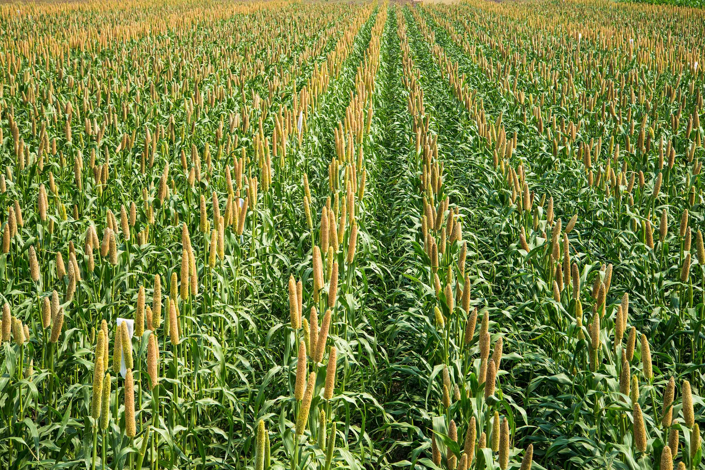

Millet (बाजरा)
Harvesting
Machine & Manual
Fertilization
NPK @ 90-110 Kg/Acre
- Millets are a group of small-seeded cereal crops belonging to the grass family (Poaceae). They have been cultivated for thousands of years and are known for their resilience, nutritional value, and adaptability to harsh climates. Common types of millet include pearl millet (bajra), finger millet (ragi), foxtail millet, little millet, barnyard millet, proso millet, and kodo millet. Unlike rice and wheat, millets require fewer resources and are often called “nutri-cereals” because of their rich nutritional profile.
- Millets are highly climate-resilient crops that grow well in semi-arid and tropical regions. They require warm weather with ideal temperatures between 25°C and 35°C for good growth. These crops are drought-tolerant and can thrive even in poor, less fertile soils where other cereals fail. Millets are less dependent on heavy rainfall compared to rice, making them suitable for regions with low to moderate rainfall (40–70 cm annually). This adaptability has made them a key crop in dryland farming systems.
- Millets are low-water requiring crops. On average, they need about 250–500 mm of water throughout their growing cycle, which is significantly less than rice or wheat. This makes millet one of the best options for water-scarce regions. They can also survive short periods of drought due to their deep-rooted system. Unlike paddy, millets do not require standing water, and they grow well under rainfed conditions, making them environmentally sustainable.
- In India and many parts of Africa, millets are grown mainly during the Kharif season (June–September) with the onset of monsoon rains. Sowing generally takes place from June to July, and harvesting happens between September and October. Some millets, such as ragi and foxtail millet, can also be cultivated in the Rabi season (October–February) in irrigated areas. Because of their short growing cycle (60–100 days), millets are ideal for multiple cropping systems and can be harvested faster compared to rice and wheat.
- Millets are called nutri-cereals because they are rich in fiber, protein, calcium, iron, magnesium, and B-vitamins. They have a low glycemic index, making them suitable for diabetic patients. Regular consumption of millet supports digestion, strengthens bones, and boosts immunity. Economically, millets provide livelihood to millions of small farmers, especially in India and Africa. With rising demand for healthy and gluten-free foods, millets are regaining importance in global markets. In fact, the United Nations declared 2023 as the International Year of Millets, highlighting their role in sustainable agriculture and nutrition.
